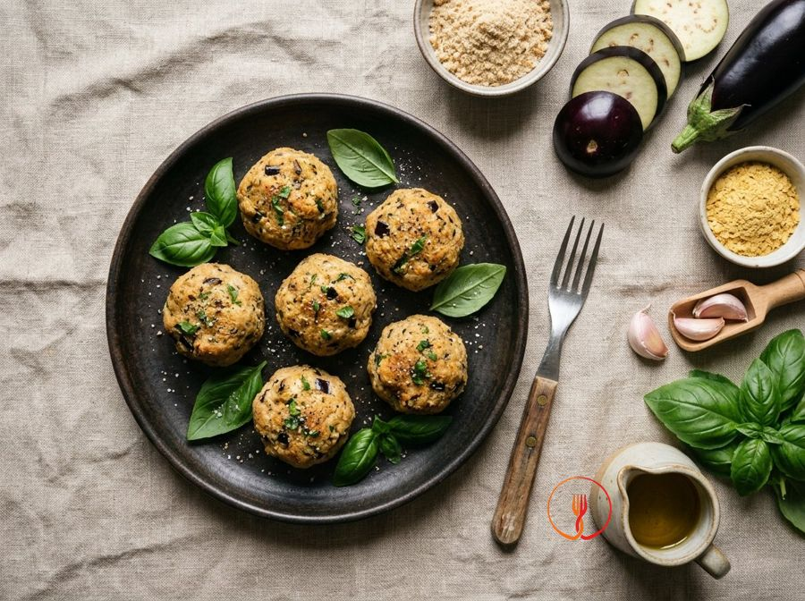

Polpette di melanzane vegane
Polpette morbide al forno con melanzane.
Sfiziose e croccanti all'esterno, queste polpette di melanzane sono un classico della cucina mediterranea in versione vegetale. Il lievito alimentare dona una nota saporita che si sposa perfettamente con il basilico fresco. Ideali come antipasto o secondo piatto leggero.
Ingredienti
- Melanzane700 g (2 medie)
- Pangrattato100 g
- Basilico fresco10 g
- Aglio5 g (1 spicchio)
- Lievito alimentare in scaglie15 g (2 cucchiai)
- Olio extravergine di oliva30 g
- Sale fino6 g
- Pepe nero macinato1 g
Allergeni
Glutine
Procedimento
- Preriscaldare il forno a 200°C in modalità statica.
- Lavare le melanzane, rimuovere il picciolo e tagliarle a cubetti regolari di circa 2 cm.
- Disporre i cubetti su una teglia foderata con carta forno, condire con metà dell'olio e cuocere per 20-25 minuti finché non saranno morbidi.
- Estrarre dal forno e lasciare intiepidire, avendo cura di scolare l'eventuale acqua di vegetazione rilasciata.
- Trasferire le melanzane in un mixer insieme all'aglio privato dell'anima, il basilico e il lievito alimentare; frullare ad impulsi fino a ottenere una polpa grossolana.
- In una ciotola, unire la polpa, il pangrattato, il sale e il pepe. Impastare fino a ottenere una consistenza compatta e modellabile.
- Formare delle polpette della dimensione di una noce (circa 35-40 g l'una) e disporle sulla teglia pulita.
- Spennellare le polpette con l'olio rimanente e infornare a 200°C per circa 15-20 minuti, girandole a metà cottura fino a doratura uniforme.
Consigli
- Strizzate bene le melanzane cotte per eliminare l'acqua in eccesso e ottenere un impasto compatto.
- Se l'impasto risulta troppo morbido, aggiungete un cucchiaio extra di pangrattato.
- Potete conservarle in frigorifero per due giorni e riscaldarle brevemente in forno per ridare croccantezza.
Varianti
- Potete arricchire l'impasto aggiungendo dei capperi dissalati per un tocco di sapidità mediterranea.
- Sostituite il pangrattato classico con una versione senza glutine per adattare la ricetta a diverse esigenze alimentari.
Valori nutrizionali (stima)
| Per porzione (130 g) | Per 100 g | |
|---|---|---|
| Energia | 890 kJ / 213 kcal | 685 kJ / 164 kcal |
| Proteine | 6.5 g | 5.0 g |
| Carboidrati | 23 g | 18 g |
| di cui zuccheri | 3.8 g | 2.9 g |
| Grassi | 9.2 g | 7.1 g |
| di cui saturi | 1.4 g | 1.1 g |
| Fibre | 6.5 g | 5.0 g |
| Sale | 1.5 g | 1.2 g |
Valori stimati con l'AI su dati medi CREA / USDA: sono indicativi e non sostituiscono il parere di un medico o di un nutrizionista.
Apri la ricetta nell'app per la lista della spesa, le schede ingredienti e i negozi vicini.